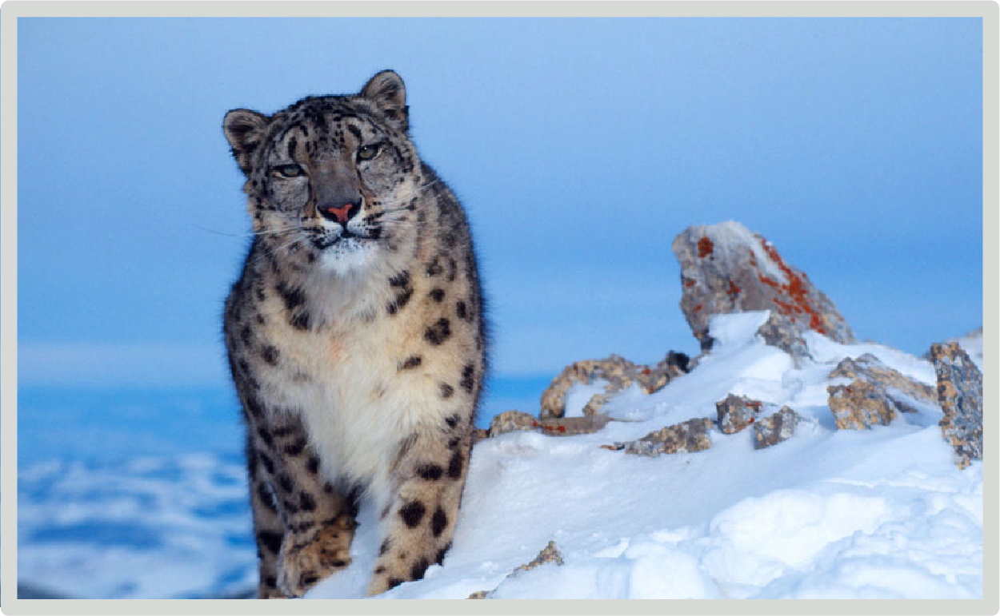

Snow Leopard

Known as the "Ghost of the Mountains" for their solitary behavior, the Snow Leopard only interacts with others of its kind during breeding season.
- Scientific Name: Panthera uncia
- Population: 4,500 - 8,745
- Length: 75 - 150 cm
- Weight: 60 - 121 lb
Snow Leopards come in a range of weight and size but are generally smaller than other big cats. They have short, thick fur and their color varies from smoke gray to yellowish tan. Their build minimizes heat loss to survive in the harsh winters that they live in. They cannot roar, but rather make a chuffing sound.